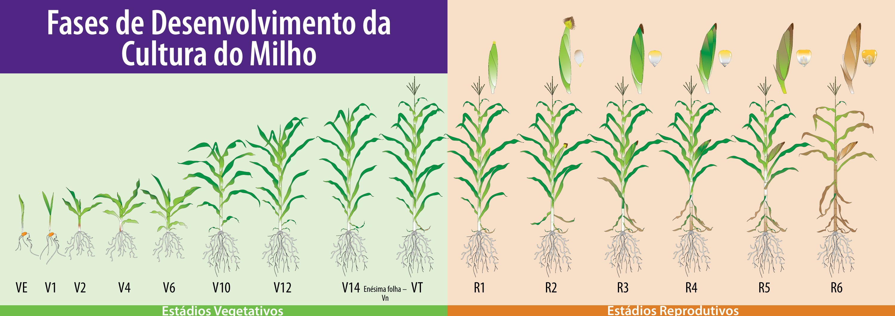

1Pré-plantio
07/10 · antes da emergência (VE)
- DessecaçãoGlifosato2,5 kg/ha
- DessecaçãoJudoka200 mL/ha
- AdjuvanteExato100 mL/ha
Talhão Santana III São João · registros até 19/11/2026

07/10 · antes da emergência (VE)
24/10 · 1ª de Verdavis
27/10 e 29/10 · adubação de cobertura
Estádio estimado pela data das aplicações com estádio anotado.
06/11 · 1ª de Fungicida
13/11 · 3ª Verdavis
Aplicação nº 3 de Verdavis no ciclo. A análise de 12/11 do projeto indica máximo de 2 no milho; confirmar no rótulo.
19/11 · 2ª Fungicida
Depois de V8, ainda não há aplicação lançada nas planilhas. Quando houver, entra no estádio correspondente.
10/10: Azokop (12), Iprover Max (7), Veraneio (18), Trichodermil (20).
19/10: Adulbo Plantio (34).
27/10: Adulbo Nicotrap (51).
01/11: Atrazina (340), Kellus Brindex (54).
05/11: Adulbo Flavio (14).
09/11: Adulbo Nicotrap (2).
O controle de defensivos não informa o estádio nem a finalidade desses itens.
Fontes: APLICAÇÃO MILHO.xlsx, APLICAÇÃO COBERTURA MILHO.xlsx e CONTROLE DE DEFENSIVOS MILHO.xlsx (pasta 2026 PARA 2027). Estádios conforme anotados na planilha de aplicação. Ilustração: Ciampitti, Elmore e Lauer (2016), Kansas State University. Atualizado em 20/11/2026 10:21.